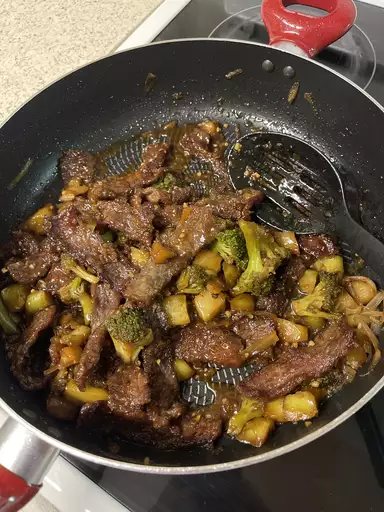

Quick and Easy Chicken Spaghetti

Description
This Mongolian beef recipe with green onions has a soy-based sauce for a
Chinese-style beef dish. Best served over soft rice noodles or rice.
Ingredients
- 2 teaspoons vegetable oil
- 1 tablespoon finely chopped garlic
- ½ teaspoon grated fresh ginger root
- ⅔ cup dark brown sugar
- ½ cup soy sauce
- ½ cup water
- 1 pound beef flank steak, sliced 1/4 inch
thick on the diagonal
- ¼ cup cornstarch
- 1 cup vegetable oil for frying
- 2 bunches green onions, cut in 2-inch
lengths
Steps
- Heat 2 teaspoons of vegetable oil in a saucepan over medium heat. Add garlic
and ginger; cook and stir until fragrant, about 30 seconds. Stir in brown sugar,
soy sauce, and water. Increase heat to medium-high; stir until sauce boils and
slightly thickens, about 4 minutes. Remove sauce from the heat and set aside.
- Place beef into a large bowl; add cornstarch and mix until beef is thoroughly
coated. Set aside until most of the cornstarch has been absorbed, about 10
minutes
- Heat vegetable oil in a deep skillet to 375 degrees F (190 degrees C).
- Shake excess cornstarch from beef slices and drop into hot oil, a few at a time,
stirring briefly and frying until edges become crisp, about 2 minutes. Remove
beef with a large slotted spoon; drain on paper towels.
- Remove excess oil from the skillet, then heat the skillet over medium heat; add
beef slices and stir in prepared sauce. Add green onions and bring to a boil; cook
until the onions have just softened and are bright green, about 1 to 2 minutes.